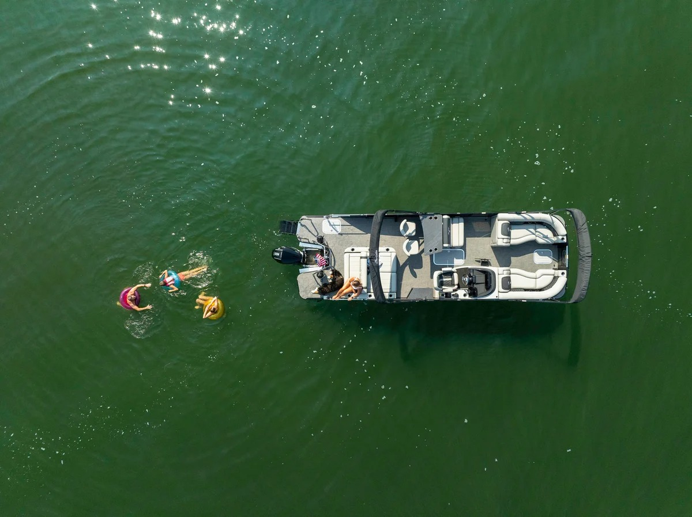

Clean Water
Lake Perris Cleanup
We sponsor and staff the annual shoreline cleanup, removing thousands of pounds of debris each spring.
Who We Are
From a single Riverside showroom to three full-service stores, Tilly's Marine has helped Southern California families get on the water for four decades — and stay there.
1985
Founded in Riverside
3
SoCal locations
40k+
Boats delivered
2nd
Generation, family run
Our Story
Tilly's Marine opened its doors in 1985 with a small lot on Indiana Avenue in Riverside and a simple idea: treat boat buyers the way you'd want to be treated, and stand behind everything you sell. Founder Bill Tilly had spent years on the lakes of the Inland Empire and knew that the sale was only the beginning of the relationship.
As surf and wake culture exploded across Lake Perris, Castaic, and the Colorado River, so did Tilly's. We became an authorized MasterCraft dealer — the gold standard in performance tow sports — and later added Barletta, bringing luxury pontoon craftsmanship to families who wanted comfort as much as horsepower. In the 2000s we expanded west into Woodland Hills to serve the San Fernando Valley, and added our Norco store to anchor the fast-growing communities between the 15 and the 91.
Buying a boat is a significant investment, and we've built our business around protecting it. Today each location runs a factory-certified service department, a stocked parts and pro shop, and covered storage — so the people who sell you the boat are the same people who keep it running for the next twenty summers.


Our Culture
Nearly everyone on our team owns a boat, races a boat, or grew up on one. That's not a hiring requirement — it's just who shows up when you build a company around the water. We're closed most summer Sundays so our crew can be on the lake with their own families.
In the Community
Clean Water
We sponsor and staff the annual shoreline cleanup, removing thousands of pounds of debris each spring.
Youth
Free coaching clinics introducing local kids to wakeboarding and water safety every summer.
Safety
Discounted service and life-jacket drives supporting county lifeguards and marine patrol units.
Answers
Tilly's Marine was founded in 1985, starting from a small lot on Indiana Avenue in Riverside. We've been serving Southern California boaters for four decades and are now in our second generation of family ownership.
We operate three full-service Southern California locations — Riverside, Woodland Hills, and Norco — each with sales, a factory-certified service department, parts and pro shop, and storage.
We're an authorized MasterCraft dealer — the gold standard in performance tow sports — and an authorized Barletta dealer for luxury pontoons, along with a selection of quality pre-owned boats.
Yes. Tilly's Marine has been family owned and operated since 1985 and is now run by the second generation — with a team of boaters who live for the same lakes our customers do.